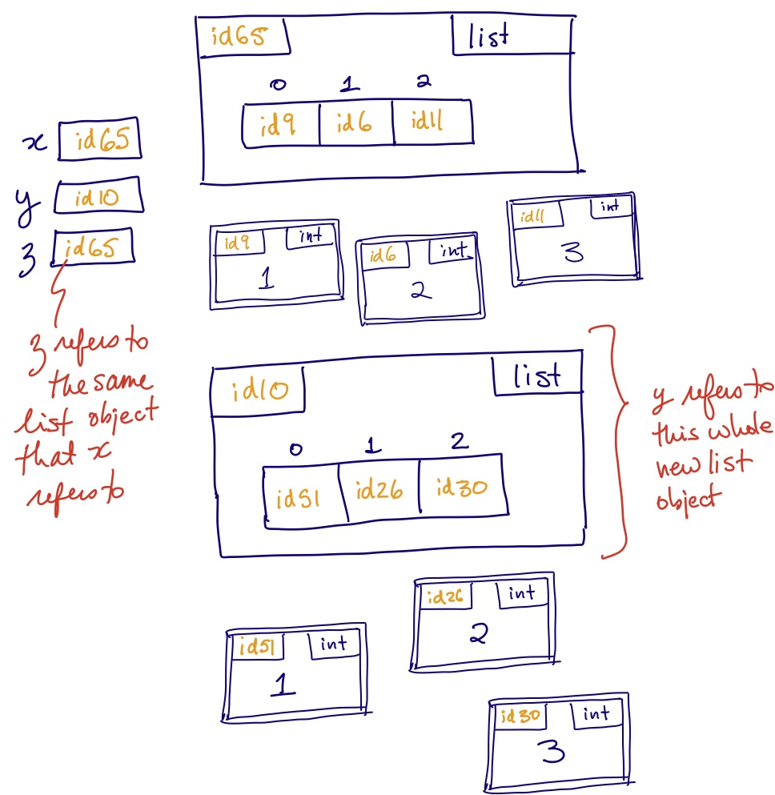

Data
Variables
In this example, there is only one variable named cat. At first it contains the id of a str object containing the string Gilbert, and then the id in it changes to be that of a str object containing the string Chairman Meow.
These examples are extremely simple, but having an accurate image will be necessary in order to avoid bugs in the much more complex code that we will write this term.
Objects have a type, but variables don’t
We saw above that Python will report to us what type(word) is. But it is really reporting the type of the object that word refers to. The variable word itself has no type.2 In fact, Python doesn’t mind if we make word refer now to a different type of object, although this is almost surely a bad idea.
A brief aside on assignment statements and evaluating expressions
You’ve written code much more complex than what’s above, but may not have had to think in detail about all the small steps that Python has to undertake to execute even a simple assignment statement. These details are foundational for writing and debugging the more complex code you will work on in csc148. So let’s pause for a moment and be explicit about two things.
Executing an assignment statement
This is what Python does when an assignment statement is executed:
Evaluate the expression on the right-hand side, yielding the id of an object.
If the variable on the left-hand-side doesn’t already exist, create it.
Store the id from the expression on the right-hand-side in the variable on the left-hand side.
Evaluating an expression
An assignment statement always has an expression on the right-hand side. Expressions can occur in other places also, for instance as arguments to a function call. When an expression is encountered, it must be evaluated. This always yields a value, which is the id of an object.
This is what Python does when an expression is evaluated:
- If the expression is a variable, find the variable. If it doesn’t exist, this is an error. If it does exist, the value of the expression is the id stored in that variable.
- If the expression is a “literal value”, such as
176.4or'hello', create an object of the appropriate type to hold it. The value of the expression is the id of that object. - If the expression is an operator, such as
+or%, evaluate its two operands, apply the operator to them, and create a new object of the appropriate type to hold the result. The value of the expression is the id of that object.
There are additional rules for other types of expression, but these will do for now.
Mutability and aliasing
Immutable Data Types
Some data types in Python (e.g., integers, strings, and booleans) are immutable, meaning that the value stored in an object of that type cannot change.
We did not change the value stored in the object—we couldn’t, since strings are immutable—but rather changed what prof refers to, as shown here:
We will use the convention of drawing a double box around objects that are immutable. Think of it as signifying that you can’t get in there and change anything.
Notice that in the example above we reassigned the variable prof—that is, we made it refer to a new str object— and we could do this even though strings are immutable. Regardless of the mutability of any objects, we can always reassign a variable.
Mutable Data Types
More complex data structures in Python are mutable, including lists, dictionaries, and user-defined classes. Let’s see what this means with a list:
Below, we perform two mutating operations on x, and check that its id hasn’t changed. Note that even changing the list’s size doesn’t change its id!
Here’s what’s going on in memory:
The lines x[0] = 1000000 and x.extend([10, 20, 30]) changed the value of the list object that x refers to. We say that these lines mutate the object that x refers to. (They also cause the creation of four new objects of type int.)
Aliasing
When two variables refer to the same object, we say that the variables are aliasesof each other.
Consider the following Python code:
x and z are aliases, as they both reference the same object. As a result, they have the same id. You should think of the assignment statement z = x as saying “make z refer to the object that x refers to.” After doing so, they have the same id.
In contrast, x and y are not aliases. They each refer to a list object with [1, 2, 3]as its value, but they are two different list objects, stored separately in your computer’s memory. This is again reflected in their different ids.

Aliasing and mutation
Aliasing is often a source of confusion for beginners, because it allows “action at a distance”: the modification of a variable’s value without explicitly mentioning that variable. Here’s an example:
The third line mutates the value of z. But without ever mentioning x, it also mutates the value of x! We call this a side effect.
Imprecise language can lead us into misunderstanding the code. We said above that “the third line mutates the value of z”. To be more precise, the third line mutates the object that z refers to. Of course we can also say that it mutates the object that x refers to—they are the same object! A clear diagram like this can really help:
The key thing to notice about this example is that just by looking at the third line of code, z[0] = -999, you can’t tell that x has changed; you need to know that on a previous line, z was made an alias of x. This is why you have to be careful when aliasing occurs.
Contrast the previous code with this:
Can you predict the value of x on the last line? Here, the third line mutates the object that y refers to, but because it is not the same object that x refers to, we still see [1, 2, 3] if we evaluate x. Here’s the state of memory after these lines execute:
Aliasing also exists for immutable data types, but in this case there is never any “action at a distance”, precisely because immutable values can never change. For example, a tuple is an ordered sequence like a list, but it is immutable. In the example below, x and z are aliases of a tuple object; but it is impossible to create a side effect on x by mutating the object that z refers to, since we can’t mutate tuples at all.
Changing a reference is not the same as mutating a value
What if we did this instead?
Again, we have made x and z refer to the same object. So when we change z on the third line, does x also change? This time, the answer is an emphatic no, and it is because of the kind of change we make on the third line. Instead of mutating the object that z refers to, we make z refer to a new object. This obviously can have no effect on the object that x refers to (or any object). Even if we switched the example from using immutable tuples to using mutable lists, x would be unchanged.
In general, a statement of the form my_var = _____ never mutates the object that my_var refers to; all it can ever do is set my_var to refer to a different object. Keep this rule in mind when you’re writing your own code, as it’s often easy to confuse mutating values with changing references.
Making a copy to avoid side effects
Sometimes it makes sense to make a copy of a data structure so that changes can be made to it without any side effect on the original. Keep in mind, though, that this consumes both space and time resources, and is often unnecessary.
Two types of equality
What if we wanted to see whether x and y, for instance, were the same? Well, we’d need to define precisely what we mean by “the same.” We can use the ==operator to compare the values stored in the objects they reference. This is called value equality.
Or, we can use the is operator to compare the ids of the objects they reference. With is, we are asking whether two variables reference the exact same object. This is called identity equality.
All built-in types have an implementation for == so that we can check for value equality; we’ll later see how to define == for our own classes.
A Special case with immutable objects
Because ints are immutable, there isn’t much point in Python creating a separate int object every time your variable needs to refer to, say, 0. They can all refer to the very same object and no harm can be done since the object can never change. This explains the following code:
Python can take this short-cut with any value of any immutable type. For example, here we can observe the short-cut with strings:
But in this example, Python doesn’t take the short-cut:
It turns out that when Python does and doesn’t take the short-cut is quite complex, and it could even change from one version of Python to the next. But it makes no difference to our code’s behaviour; the only reason we need to be aware of it is so that we are not surprised when we see that two variables unexpectedly have identity equality.